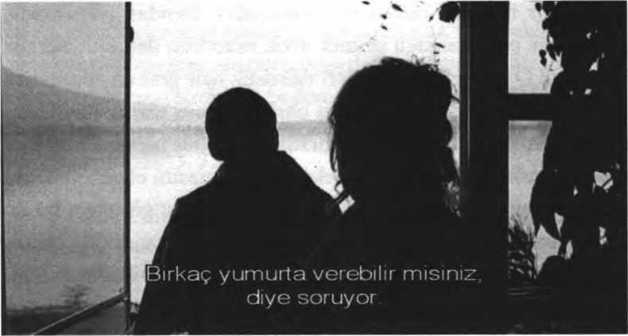
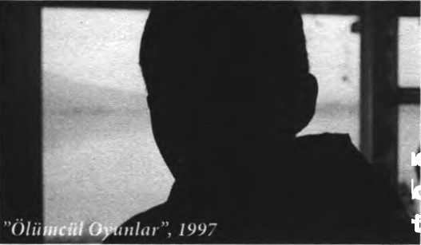
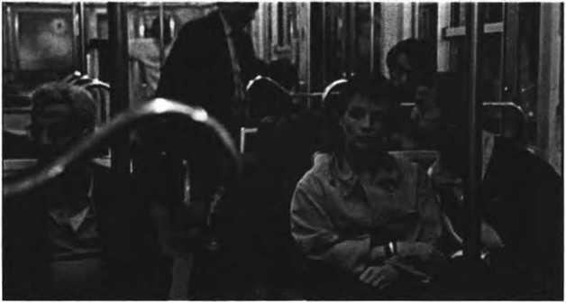

Modern Hayal Kırıklıkları: Haneke filmlerinde içeriği tartışırken...
Christopher Sharrett, Haneke ile yaptığı ve ‘Bilinen Dünya başlığını attığı röportajına, “Haneke filmleri, değişik düzeylerde modern toplumun hayal kırıklıklarım belgelemektedir” (Sharrett, 2003: l)11 cümlesi ile başlar. Kuşkusuz, bu belgeleme çabasının yeni ve Haneke’ye özgü olduğunu söylemek oldukça zordur. Özellikle benzer sınıfsal aidiyetlerine rağmen tıpkı Haneke gibi birçok sanatçı, yaşadığı çağın hayal kırıklıkları üzerine söz söyleme gereği duymuştur. Modern toplumun başarısızlıkları ve hayal kırıklıkları ile ilgili, şimdiye kadar neredeyse söylenmemiş söz kalmamış gibidir. Ancak bir başarısızlıktan ya da hayal kırıklıklarından söz edilecekse eğer başarısızlığın ve hayal kırıklıklarının mekân ve zaman aidiyetliklerine de dikkat edilmesi gerekir. Kısaca hangi modern toplumdan söz ediliyorsa, söz konusu olanın da o modern toplumun başarısızlıkları ve hayal kırıklıkları olduğu göz ardı edilmemelidir. Örneğin romantiklerin başkaldırdıkları ve içinden çıktıkları toplumsal düzen ile Jean L. Godard’ın filmleriyle betimlediği ve eleştirdiği toplumsal düzenin aynı olduğunu söylemek mümkün değildir.
Haneke filmlerini eleştirirken de, bu filmlerin zamansal ve mekânsal aidiyetlikleri önemsenmelidir. Ernst Fischer’in söylediği gibi yeni biçimlerin eninde sonunda yeni özlerce belirlendiği düşünülüyorsa eğer, Haneke filmlerindeki yeni biçemi anlamanın yollarından biri de, onu belirleyen özü iyi tespit edebilmektir. Çünkü
“Sanat alanından belirli bir yapıtı, akımı ya da dönemi çözümleyebileceğimiz zaman, önyargılardan sakınmamız gerekir. Ama sanat tarihinin genel görünüşünü bir bütün olarak ele aldığımız zaman, sanatta öz ve biçim değişmelerinin, eninde sonunda, toplumsal ve ekonomik değişmelerin sonucu olduğunu görmeden edemeyiz... Yeni bir özün zaman zaman eski biçimlerle dile getirildiğine rastlanır; ama yeni özün eski kalıpları parçalamasına ortaya çıkıp yeni biçimler yarattığı da görülür.” (Fischer, 2010: 139)
Milan Kundera ‘Roman Sanatı’ kitabında, insanı hayal kırıklıklarının derin kuyularına iten, onu tıpkı doğa gibi uzmanlaşılmış bilimsel disiplinlerin içinde unutarak bir nesne haline getiren modern çağın, aynı zamanda romanın doğuşuna hizmet ederek kendini affettirdiğini ima eder (Kundera, 2005: 15-18). Böyle bakıldığında, edebiyatta, romantiklerden varoluşçulara; sinemada da, Dadaistlerden Yeni Gerçekçilere sanat mecraları, dile getirdikleri hayal kırıklıkları ile ne kadar modern çağa aitseler; Hitler ve atom bombası da yarattığı hayal kırıklıkları ile o kadar modern çağa aittir ve sözü edilen sanat mecralarına ait eserlerin yaşanılan gerçeklikle teması ne kadar yapaysa, Hitler ve atom bombasının da o kadar gerçektir. Haneke filmlerinin biçemsel yönelimi de bu karşıtlıkla ilgileniyor görünmektedir. Kullanılan yabancılaştırıcı bütün bileşenler, aynı zamanda sanatın yaşanılan gerçeklik karşısındaki ‘yapaylığına’ ve ‘güçsüzlüğüne’ birer gönderme gibidir. Buradaki temel soru ise Haneke filmlerinde konu edilen gerçekliğin ne olduğudur.
Öncelikle modern çağı, değişen üretim biçimi ve ona özgü ilişkiler ağı içerisinde tanımlamak gerekir. Toprağa bağlı feodal üretim biçimi ve ona özgü üretim ilişkilerinin, ardıl tarihsel zorunlulukların sonucu kapitalizme doğru evrildiği ve kapitalizmin, modern çağın doğuşunda, yeni bir üretim biçimi olarak üstüne düşen görevi fazlasıyla yerine getirdiğini söylemek mümkündür. ‘Kusursuz’ işleyişini, modern bilimin gelişmesine borçlu olan kapitalizm aynı zamanda, bu bilimin sürekli yeniden üretilmesini sağlayan tarihsel bir yönelim olarak nitelendirilirse eğer, modernizmin hayal kırıklıklarının da bu yönelimle ilişkisini kurmak kolaylaşır.
İkinci olarak ise modern çağ tanımlanırken kapitalist üretim biçimi ve ilişkileri ile bu ilişkileri doğuran ve bu ilişkiler sayesinde kendini sürekli yeniden üreten bilimsel düşünüş arasındaki yakın ilişki de unutulmamalıdır. ‘Rasyonalite’ olarak adlandırılan bu düşünüş, fiziki ve toplumsal çevreyi belirsizlikten arındırmak, kontrol edilebilir hale getirmek ve mümkün olduğunca kusursuz bir şekilde işlemesi için bunları meta üretim sürecinin emrine vermek üzere çalışır. Meta üretim sürecinin, yani kapitalizmin kusursuzluğu işbölümüne dayanır ve bu işbölümü de tıpkı bilime olduğu gibi hayatın her alanına dayatılır. Örgensel her çalışma ve yaşam süreci, parçalanıp öğelerine ayrılır ve böylelikle, yapay olarak birbirinden kopuk hale getirilen parçalar, bu parçalarla ruhsal ve fiziksel düzeyde uyumlu hale sokulmuş uzmanlar aracılığıyla en akılcı bir şekilde işletilir (Lukács, 1998: 182). Belirli işlerin birbirinden kopuk hale getirilerek rasyonelleştirilmesi ve yalnızlaştırılması, sonunda, o işleri ister istemez özerk bir duruma iter. Bu da onların toplumsal bütünün bir parçası olmaktan çok uzak, kendi başlarına kendi özgül yasalarının mantığına göre gelişmesi ve işlemesi anlamına gelir (1998:183,184).
İşbölümü sonunda ortaya çıkan parçalanmışlık öyle bir hal alır ki insana, her şey, onun emek ve yeteneğinden yoksun kendi kendine işliyormuş gibi gelir (1998:60). Bunun ilk sonucu olarak gösterilebilecek hayati durum yabancılaşmadır ve yabancılaşma, modern çağın ilk hayal kırıklığı olarak da gösterilebilir. Çünkü sadece ihtiyaç duyulan uzvuyla meta üretim sürecine dâhil edildiği için kendi bedenine; ihtiyaç duyulan uzvu nedeniyle makinenin bir parçası ve rekabet etmesi gereken bir yabancı olarak görüldüğü için ötekine; meta üretim sürecinin belirli bir alanına dâhil edildiği ve bunun bilgisi dışında bilgi edinmeye gücü yetmediği için de (aşırı yorgunluk, parasal ve zaman yokluğu nedeniyle), bu sürecin ve tabi ki fiziki ve toplumsal çevrenin bütününe yabancılaşan insan artık, zorla dâhil edildiği meta üretim sürecinin gerektirdiği fiziki ihtiyaçlarını en az düzeyde karşılamaktan başka bir şey yapamaz haldedir. Modern bilimin ya da bu bilimi koşullandıran rasyonel düşünüşün, meta üretim sürecinin gereklilikleri için insana, beygir gibi çalışmasını sağlayacak kadar kazanmak zorunda olduğunu önermesi ve çalışmadığı zamanlar onu bir insan olarak görmeyerek, böyle düşünmeyi yine rasyonalitenin etkisinde şekillenen, hukuka, tıbba, dine, istatistiğe, politikaya ve yoksullar evine bırakması (Marx, 2009: 25) ise oldukça ilginçtir.
Asıl sorun ise modern çağın, onu tanımlayan bileşenlerinin neden olduğu, sözü edilen yabancılaşmanın çok ötesinde ve sadece işçi sınıfında değil; insanlığın bütününde yol açtığı hayal kırıklıklarıdır.
Bunlardan ilki, meta üretim sürecinin gerekli kıldığı işbölümünde kendine ait zorunlu alana sıkıştırılan insanın Kundera’nın söylediği gibi, bilgide ilerledikçe dünyanın bütününü de kendini de gözden kaçırması ve giderek varlığın unutuluşu denilen şeyin içinde kaybolmasıdır (Kundera, 2005; 15, 16). İkinci olarak rasyonel tahakküme boyun eğerek, kendine dayatılan alanın düşünme biçiminin dışında var olabilecek düşünme yetisini giderek yitirmesi, hayatın öbür alanları ve yapay olarak bölünmüş bu alanların bütünü konusunda deneyim yoksunu hale gelmesidir. Üçüncüsü, ait olduğu ve onu giderek daha da sığ hale getiren sınırlı deneyim alanının gerektirdiği ahlaki zorunluluklara uymasına rağmen, kendisine cevap vermeyen uygarlığın karşısında suçlu ilan edilerek vicdani olarak baskı altına alınması ve bunun sonunda nevrotik huzursuzluklar yaşayarak uygarlığı tehdit eder hale gelmesidir. Son olarak ise zaten ulaşılması mümkün olmayan mutluluk adresinin yerinin haritada sürekli değiştirilmesi ve sürekli değişen bu adrese ulaşamamaktan da sorumlu tutulmasıdır.
Bu tür konularla uğraşan hemen herkes Freud’un ‘Uygarlığın Huzursuzluğu’ kitabını bilir. Bireydeki ve uygarlıktaki huzursuzlukların, birey ile uygarlığın gelişimi arasındaki benzerlik ile açıklanmaya çalışıldığı bu kitapta, insanın değişmez nihai amacının, mutluluk ve haz arayışı olduğu söylenir. Ayrıca bu amacının biri olumlu, öbürü de olumsuz iki hedefi vardır: acı ve keyifsizlik veren şeylerin yokluğu; ikincisi de yoğun haz duygularının varlığı. Ancak Freud a göre bu isteklerin hayata geçmesi neredeyse imkânsızdır. Evrenin bütün oluşumları insanın mutluluk arayışına ve onunla yakından ilişkili haz isteğine karşıdır. Dolayısıyla mutsuzluk duymak daha kolaydır ve acı, insanı üç yönden kuşatır: “Kaderi çöküş ve yok oluş olan, uyarı işaretleri olarak ağrı ve kaygıdan da yoksun kalmayan kendi vücudumuz; karşı durulmaz, acımasız, yıkıcı güçlerle bizi mahveden dış dünya ve son olarak da öbür insanlarla ilişkilerimiz.” (Freud, 2004: 36,37)
Zaman ve mekân kontrolünü giderek artıran ve kendi uzuvlarını tamamlayan teknik buluşlar ve özellikle bu buluşlara öncülük eden rasyonel düşünüş sayesinde tıpkı tanrı gibi mutlak güç ve bilgi idealine ulaşmış gibi görünse de bu benzeyişin, insana mutluluk getirdiğini söylemek zordur (Freud, 2004: 50). Özellikle öbür insanlarla ilişkilerinin ya da kendi kurduğu toplumsal düzenin ideallerinin gereklilikleri doğrultusunda gerçekleştirdikleri ve feda ettikleri, ne kendi vücudunun yok oluşu ne de doğanın acımasızlığı karşısında insanı güçlü kılabilmiştir. Aksine modern uygarlıkla birlikte ortaya çıkan ve sürekli yeniden üretilen toplumsal ideallerin, bu güçsüzlüğünü saklamaya yönelik çabasının ve isteklerinin, insanı giderek daha güçsüz ve mutsuz hale getirdiği bile söylenebilir. Freud’un toplumun kendi idealleri uyarınca insana dayattığı engellemelerin çekilmez hale gelmesinin onu nevrotikleştirdiğinin saptandığını söylemesi de (2004: 46,47) bu anlamda oldukça önemlidir.
İnsanın sahip olduğu yaşam enerjisinin (cinsel enerji/libido), yüceltilme yoluyla belirli alanlara kaydırılarak uygarlığın gelişimi için kullanılması, bu içgüdünün bütünüyle tatmin edilebildiği anlamına gelmez. Aynı zamanda toplumun kendi idealleri doğrultusunda insanlığa dayattığı engellerden söz ederken, bu ideallerin yine aynı insanlık tarafından şekillendirildiğini gözden kaçırmamak gerekir. Ancak bunun oldukça geçerli bir nedeni olduğu da bilinmelidir. Bu anlamda toplumun kuruluşu ya da insanlar arası ilişkilerin düzenlenmesi insanın sözü edilen temel içgüdüsünü tatmin etmeye yönelik güvenli bir ortamı yaratma çabasının bir ürünüdür (2004: 54, 55). Çünkü
“Böyle bir çaba olmazsa bu ilişkiler bireyin keyfi iradesine kalmıştır; yani fiziksel açıdan daha güçlü olan birey, bu işi kendi çıkarlarına ve içgüdüsel itkilerine uygun olarak halledecektir. Bu kişinin kendisinden güçlü bir başka bireye çatması bir şey değiştirmez. İnsanların birlikte yaşaması ancak tek tek her bireyden daha güçlü bir çoğunluğun bir araya gelmesi ve tek tek her bireyin karşısına bir bütün olarak çıkması ile mümkün olur. Bu topluluğun gücü, ‘kaba kuvvet” olarak damgalanan bireyin gücü karşısına ‘hak’ olarak çıkar. Bireyin gücünün yerine topluluğun gücünün geçirilmesi uygarlık açısından belirleyici adımdır. Bu topluluğun özünü -tek başına birey, tatmin olanaklarını kısıtlayan hiçbir şey tanımazken- topluluk üyelerinin kendi tatmin olanaklarının sınırlandırması oluşturur. Demek ki uygarlığın ilk talebi adalettir; yani bir kez kurulmuş olan hukuk düzeninin, bir daha tek bir bireyin yararına bozulmayacağının garantisidir.” (2004: 53)
İnsanlığın rasyonel düşünüşe ve meta üretim sürecinin gerekliliklerine inanarak boyun eğmesinin nedeninin de bu adalet talebi olduğu söylenebilir; yani modern uygarlığın “bir gün, herkesin yeterli imkânlardan yararlanacağı ve hiç kimsenin başkalarının sahip olmadığı imtiyazlara sahip olmayacağı bir toplumsal düzen kurmayı vaat etmesidir.” (Wallerstein, 2003: 154) Ancak modern uygarlığın yarattığı hayal kırıklıkları, sadece bu vaadin, söylenildiği gibi özellikle çalışanlar için gerçekleşmemiş olmasıyla ilişkili değildir; bunun çok daha ötesinde bir gerçeklik söz konusudur. Bu gerçeklik bütün bilgisine ve uygarlık adına feda ettiklerine rağmen insanlığın içine düştüğü boşluk ile ilgilidir: Meta üretim süreci için gerekli olan ve herkesi, belirlediği uzmanlık alanlarına hapseden rasyonel düşünüşün insanlığa, varlığını unutturmasıdır. Varlığın unutuluşu, Max Weber’in ‘demirkafes’ ve ‘bürokrasi’ metaforu ile açıkladığı büyük düzeneğin içine hapsedilen insanlığın, kendini feda ederek, toplumun bütüncül mutluluğu adına çalıştığını zannederken, sadece bu kafesin işleyişi adına çalışır hale gelmesidir. Öyle ki bu düşünüş, sonunda, bütünün işleyişinin değişmez ve bilinemez bir döngü olarak kabul edildiği; kendi işlediği cinayeti dahi üstünün emrine itaatle açıklayan ve yapılanı doğru kabul eden, kendi ahlakını yaratabilmiştir:
“Bir kurumun üyelerinin, otorite sahibi kişiye itaat ederken, o kişiye bir birey olarak itaat yükümlülüğünde bulunmadıkları, kişilerden ayrı olarak düzene uymakta oldukları savunulmaktadır. Buna göre, ancak düzen gereğince güç sahibine tanınmış olan ve sınırları rasyonel olarak belirlenmiş alan içinde kendisine boyun eğilmesi bir yükümlülük haline gelmektedir.” (Weber, 2006: 45)
Weber’in ‘Ekonomi ve Toplum’ kitabında çeşitli eylem tiplerinden ve bu eylem tiplerinin toplumsal ya da ekonomik olarak nasıl şekillendiğinden söz ederken anlattıklarını; meta üretim sürecinin ve onun düşünüş biçiminin yarattığı ahlaki değer ‘standartları’ açısından yeniden düşünmekte yarar vardır. Weber, toplumsal eylem tiplerinden söz ederken özellikle iki eylem tipini öne çıkarır. Bunlar, araçsal rasyonel eylem ile değer rasyonel eylemdir. Bakıldığında ikinci eylem tipi, “görev, şeref, güzellik arayışı, dini bir çağrı, kişisel bağlılık ya da neden ibaret olursa olsun bir ‘davanın’ önemi tarafından dayatılır gözüken inançlarını, kendisine olası bedelleri ne olursa olsun uygulamaya koyan insanların”, koşulsuz eylemleri olarak nitelenir ve araçsal rasyonellik açısından akıldışıdır (irrasyonel) (Weber, 2012: 133, 134). Oysa eylemin, değer rasyonelliğe ait duygusal ve geleneksel güdülerle gerçekleşmesinin mümkün olmadığı araçsal rasyonel eylemde hemen her şey, kişinin hesaplanan ve öbür kişiler ile toplum tarafından beklenen, kendi hedeflerine ulaşabilmesi için kullanılan araçlar olarak görülür. Burada amaç oldukça önemlidir ki amaca ulaştırabilecek her şey rasyonel olarak değerlendirilen araçlar olarak belirir (2012:134). Bu toplumsal eylem tipiyle, Weber’in ekonomik olarak tanımladığı biçimsel rasyonel eylem tipi arasında bir koşutluk kurmak mümkündür. Hatta kişiyi bağlayan çeşitli koşulsuz emirleri ve talepleri içeren değer rasyonelliği ile biçimsel rasyonalite arasında da bir ilişki kurulabilir. Çünkü koşulsuz da olsa herhangi bir güdü ile gerçekleştirilen eylemler de, bu eylemleri talep eden ya da emreden düzenleyicinin amaçları doğrultusunda biçimsel rasyonalitenin gerektirdiği şekilde ve aciliyet sırasına göre düzenlenebilir (Weber, 2012:133, 134, 200). Dolayısıyla burada, düzenleyicinin tasarladığı ölçeğe göre marjinal fayda söz konusu edilebilir. Sonuçta meta üretim süreci açısından marjinal fayda, kişinin ait olduğu uzmanlık alanı doğrultusunda kendinden istenenleri gereğince yerine getirmesi halinde, kendini gerçekleştirebilmesi için ona sağlanacak olanaklar ile ilgili olabilir. Öyleyse kişi, kendini gerçekleştirebileceği uygun olanakların sağlanması; yani adil bir toplumsal düzen adına her eyleminin hesaplanabilir olduğu ve rakamsal ya da parasal karşılıkla ölçüldüğü biçimsel rasyonel eylemler düzeneği içinde; ahlaki ve toplumsal olarak da araçsal rasyonelliğin demirkafesi içinde eylemeye itilecektir. İster demokratik ister otoriter isterse de totaliter rejimler, hangisi olursa olsun toplumsal olarak eylemlerin ahlaki dayanakları, sonuçta araçsal; ekonomik dayanakları da biçimsel rasyonalitenin gerektirdiği hale bürünecektir. Burada asıl gerçekleşecek olan ise mutluluk talebi yerine, neyin marjinal olarak faydalı olacağına karar veren ve bu doğrultuda toplumsal düzeni tasarlayanların istekleri ve hatta kendi kontrollerinden de çıkan ve herkesi kendine bağımlı kılan meta üretim sürecinin zorunluluklarıdır. Bu tam olarak rasyonel düşüncenin esas amaç haline geldiği ve herkesin bu düşünüşün esiri olarak hiçbir şekilde mutlu olamadığı ve varlığın unutulduğu bir uygarlığın var edildiği anlamına gelir. Bir kapitalist için sınırsız sermaye birikimi güdüsü bile varlığın unutuluşu ile ilgili zorunlu, sonsuz ve amaçsız eylemler dizisini gerektirir: “İflas, kapitalist sistemin acımasız bir temizlik malzemesi olmuş, tüm iktisadi aktörleri durmadan şu veya bu ölçüde, çok çiğnenmiş yolları izlemeye zorlamış, kolektif olarak gitgide daha çok sermaye birikmesini sağlayan yönde davranmaları için baskı yapmıştır.” (Wallerstein, 2006:16)
İşçi, memur ya da kapitalist kişilerin, statüsü her ne olursa olsun meta üretim sürecinin işleyişi adına, kendine ait alan içerisinde uyulması gereken rasyonel kurallar bütünüyle çepeçevre sarılması durumu, varlığın unutuluşu kadar ve bu unutuluşu hızlandırma eğilimi taşıyan başka bir sorunu daha yaratır. Sadece kendi kendisinin işleyişini sonsuz ve mükemmel kılmak üzere çalışan meta üretim sürecinin ve onu koşullandıran rasyonel düşünüşün, kişileri, kendi alanları içine hapsederek, o alan dışındaki bütün fiziki ve toplumsal çevre hakkında; hatta bizzat meta üretim sürenin bütünü ve tabi ki kendi dünyasının zorunlulukları konusunda deneyim yoksunu hale getirmesi de önemli bir hayal kırıklığıdır. Bu durum düzeni ve boyun eğmeyi, dünyayı boyunduruğu altına alırken öğrenen benliğin, kısa sürede hakikat ile düzenleyici düşünceyi tümüyle bir tutar hale gelmesiyle12 ilgilidir ve sadece işçi ya da fiziki emeğini satarak para kazanan öbür çalışanlar için değil, bütün insanlığa sirayet etmiştir. Mitosla aydınlanma arasında bir koşutluk kurarak, modern dünyanın hayal kırıklıklarını dile getirmeye çalışan Adorno’nun ve Horkheimer’m söyledikleri, bu noktada oldukça önemlidir:
“Durdurulamaz ilerlemenin laneti durdurulamaz gerilemedir... Bu yalnızca duyusal dünyanın cismani yakınlığa dayalı deneyime ilişkin bir gerileme değildir; aynı zamanda duyusal deneyimi boyunduruğu altına almak için kendini ondan ayıran başına buyruk anlığı da etkiler. Anlıksal işlevin birleştirilmesi sayesinde duyular üzerindeki egemenliğin gerçekleştirilmesi, düşünmenin görüş birliği üretmek için bir kenara çekilmesi; düşünmenin yanı sıra deneyimin de fakirleşmesi anlamına gelir. Düşünme ve deneyimin birbirinden ayrılması her ikisini de sakat bırakır. Küçük olanın güdümlenmesinden fazlası söz konusu olunca, kurnaz Odysseus’tan günümüzün naif genel müdürlerine dek tüm efendilerin iyice belledikleri gibi düşünmenin örgütlenme ve yönetimle sınırlanması, yukarıdakileri etkisi altına alan bir kısıtlanmışlığı da beraberinde getirir... Mitostan bu yana itaatkâr proletaryanın payına bir tek sağır kulakların düşmesi, komutayı elinde tutan durağanlığından daha iyi değildir. Toplumun meyve misali aşırı olgunluğu, varlığını hükmedenlerin hamlığına borçludur. Üretim sistemine gerektiği gibi hizmet edebilmesi için insan bedenini çoktan kendine uygun hale getirmiş olan toplumsal, ekonomik ve bilimsel aygıt ne kadar karmaşık ve hassas hale gelirse, bedenin muktedir olduğu yaşamlar o oranda fakirleşir. Niteliklerin elenip işlevlere çevrilmesi, bilime dayalı rasyonelleştirilmiş çalışma biçimleri yoluyla halkların deneyim dünyasına yayılır ve bu deneyim dünyasının amfibilerinkine benzetme eğilimi gösterir. Kitlelerin bugünkü gerileyişi duyulmamış olanı kendi kulaklarıyla işitme, dokunulmamış olana kendi elleriyle dokunma becerisinden yoksun olmalıdır; yenik düşmüş her bir söylenceselin yerini alan, yeni bir körlük biçimidir.” (Adorno ve Horkheimer, 2010: 58, 59)
Adorno’nun ve Horkheimer’in çok önceleri saptadığı modern dünyaya özgü deneyim yoksunluğu halini, Zygmunt Bauman, akışkan modern dünyanın ve onun dayattığı yeni yaşam biçiminin çok daha hızlı bir şekilde artırdığını söyler. Çünkü yeni yaşam biçimi, yeni nesillere, deneyim edinmek yerine, uçucu mutluluğu ve hazzı yakalamak üzere sürekli deneyim toplamayı mecbur kılar, insan yaşamı bir sanat eseri ise eğer
“Geçmiş kuşaklar muhtemelen kalıcı değerlere sahip, ebedi, zamanın akışına ve kaderin cilvesine karşı direngen olan bir şeyler düşünecektir. Eski ustaların alışkanlıklarını izleyerek, ilk fırça darbelerini uygulamadan önce tuvallerini kılı kırk yararak kullanıma hazırlayacak ve boya katmanlarının kurudukça çatlamayacağını ve ebediyen olmasa da, yıllarca renklerindeki canlılığı koruyacağını garantiye almak için çözücüleri de aynı dikkatle seçecektir... Daha genç kuşaklar ise, şu andaki ünlü sanatçıların pratiklerini ‘happeningleri’ ve ‘enstalasyonları’ taklit etmelerini sağlayacak hünerler ve örnekler bulmaya çalışacaktır... Gençler, sanat yapıtlarını, odalarındaki duvar kâğıtlarının üzerlerine yapıştırdıkları posterlere ve diğer afişlerle ilişkilendiriyor da olabilir. Afişlerin, tıpkı duvar kâğıtları gibi, sonsuza kadar odalarını süsleyemeyeceğini bilirler. Er geç yeni idollerin suretine yer açmak için duvardan sökülerek ‘güncellenmeleri’ gerekecektir.” (Bauman, 2013: 86, 87)
Sonuçta temel hayati deneyimleri edinmekten bile mahrum bırakan modern sürecin, yaşam alanlarının çok ötesine taşıyarak uzmanlara devrettiği, hastalık, yaşlılık ve ölüm gibi durumlar ve yas tutma ile yine uzmanlara devrettiği, bazı günlük yaşam uygulamaları karşısında, insanlığı çaresiz bıraktığı söylenebilir.
“Ölüm, ölmek ve yas tutmak artık günlük yaşamla bütünlük içinde değildir; ölüm, önce tıp kurumlarında bir alt-bölüm haline getirilerek tecrit edilmiş bir alana, sonra da bu konuda uzman kurumlara -bakımevlerine- taşınmıştır. Yas, bu yüzyılın büyük kısmında düzensiz biçimde ‘sürüklenmiş’, yas tutmayla ilgili yerleşik toplumsal kuralların geçerliliğini kaybedişinin ardından da yavaş, nispeten yalıtılmış bireylere rehberlik edecek profesyonel ‘uzman sistemler’ çıkmaya başlamıştır.” (Craib, 2006: 28, 29)
Üçüncü hayal kırıklığı ise sözü edildiği gibi modern sürecin, kendini gerçekleştirebileceği, mutluluk ve hazza ulaşabileceği uygun bir toplumsal ortam bulma umudunu yitirmesi ile insanlığın, yaşam enerjisini (cinsellik/libido) ve bunu gerçekleştirmesini kolaylaştıracak ya da zorlaştıracak olan saldırganlık içgüdüsünü feda ederek uyum sağladığı toplumsal yaşamı tehdit eder hale gelmesidir. Freud’un bu konuda söyledikleri oldukça dikkat çekicidir: toplumun ekonomik yapısının cinsel özgürlüğün miktarını etkilediğini söylemesi gibi. Bununla kastedilen, “uygarlığın kendi kullanımı için cinsellikten büyük miktarda ruhsal enerji çekip alması gerektiğinden, ekonomik zorunluluğun gerektirdiği şekilde hareket ettiği”dir (Freud, 2004: 60). Bu cinsel enerjinin, ekonominin gereklilikler doğrultusunda, uygun ve açık olan belirli kanallara aktarılması sürecidir:
“Gerçeklik, uygarlığın hakkına düşen bağlarla yetinmediğini, toplumun üyelerini birbirlerine libido açısından da bağlamak istediğini, bunun için her yolu açtığını, güçlü özdeşleşmeler sağlamak için her yolu açtığını, topluluk bağını arkadaşlık ilişkileri ile güçlendirmek için büyük miktarda amacı ketlenmiş libidoyu seferber ettiğini gösterir bize. Bu niyetlerin gerçekleştirilmesi için cinsel yaşamın kısıtlanması kaçınılmazdır.” (2004: 65)
Freud, “Uygarlık, insanların saldırganlık içgüdülerine set çekmek, bunların dışavurumlarını karşıt ruhsal tepkiler kurma yoluyla düşük düzeyde tutmak için elinde ne varsa seferber etmek zorundadır.” (2004: 68) diyerek, başka bir insani duruma daha dikkat çeker ki bu içgüdünün de tıpkı libido gibi adalet talebinin toplum tarafından yerine getirilmemesi karşısında, bireyleri ve bütününde uygarlığı huzursuz kılacak bir tehdit haline geldiğidir.
“Uygarlık insanların yalnızca cinselliğini değil, saldırganlık eğilimini de böyle büyük fedakârlıklara zorladığına göre, insanların uygarlığın içinde kendilerini mutlu hissetmekle zorluk çekmelerini daha bir anlaşılırlık kazanır. Hiçbir içgüdü kısıtlaması tanımadıkları için, ilk insanlar bu anlamda gerçekten de daha iyi durumdaydılar. Bunu dengeleyen unsur, böylesi bir mutluluğu uzun süre tatma garantisinin çok düşük oluşuydu. Uygarlık insanın mutluluk olanağının bir bölümünü bir parça güvenlik ile takas etmiştir. Ancak unutmamamız gereken bir nokta, ilkel ailede yalnızca aile reisinin böyle bir içgüdü özgürlüğünün keyfini çıkardığıdır; diğer bireyler köleci bir baskı altında yaşıyordu. Uygarlığın nimetlerinden yararlanan azınlık ile bunlardan yoksun bir çoğunluk arasındaki karşıtlık, uygarlığın bu ilk çağlarında aşırılığa vardırılmıştı. Bugün yaşamakta olan ilkel halkların titiz bir şekilde incelenmesi, bunların içgüdüsel yaşamlarının özgürlük açısından hiç de imrenilecek durumda olmadığını göstermiştir; bu yaşamda modern uygar insanınkinden farklı, belki de daha katı kısıtlamalar söz konusudur.” (2004: 70, 71)
Modern uygar insanın, ilkel insandan daha rahat koşullarda kendini gerçekleştirme olanağını bulduğunu söylemek ne kadar doğrudur bilinmez; ancak adalet terazisini şaşırtarak, toplumun belirli bir kesimini daha özgür ve mutlu kılan meta üretim sürecinin düşünme biçiminin, rasyonalitenin artık hemen herkesi, kendi işleyişine mahkûm etmesinin modern uygarlığı ve modern insani huzursuz eden temel tehdit olduğunu söylemek mümkündür. Dolayısıyla toplumsal ve insani nevrozların artışını, uygarlık adına belirli kanallara aktarılmak istenen libido ve saldırganlık içgüdüsünün bastırılamamasını, buna bağlamak çok daha doğrudur. Adorno’nun ve Horkheimer’in söyledikleri de, yaşanılan bu durumu oldukça anlaşılır bir şekilde özetlemektedir:
“Düşünmenin mantıktan uzaklaştırılmasıyla, insanların fabrika ve bürolarda olgunlaşmaları üniversite dersliklerinde onaylanmış olur. Nasıl tabu, tabulaştıran erke bulaşıyorsa, Aydınlanma da kendisini oluşturan zihne bulaşır. Ama böylece bireysel yazgı ya da kriz ve savaş gibi kolektif bir yazgı söz konusu olduğunda, doğa, kendisini defedeceğini vaat eden sürecin aracılığıyla, gerçek bir öz-varlığı koruma mücadelesi olarak dizginlerinden boşanır.” (Adorno ve Horkheimer, 2010: 52)
Mutluluk, haz arayışı ve acıdan kaçış ile ilgili bireyin sorumlu tutulmasının, başka bir hayal kırıklığına daha neden olduğu söylenebilir ki bu da modern uygarlığın başarısızlığın faturasını, tek tek insanlara çıkarılması, sürekli altından kayan mutluluk filikasına ulaşamadığı için de suçlanmasıdır. Alain de Botton’ın bu durumu meritokratik düzen ile açıkladığı görülür. Bu düzende, başarılı kişiler başarıyı hak ediyorsa eğer, aynı şey başarısızlar için de söylenebilir. Çünkü bu düzende, fakirlik de tıpkı zenginlik gibi adil bir makamca dağıtılır bireylere. Alçak statü, can sıkıcı olmasının yanı sıra, artık kişinin hak ettiği bir durumdur ki kişinin mutsuzluğu da bu durumla yakından ilişkilidir (Botton, 2008: 99). Öyleyse meritokratik düzenin gerekliliklerini yerine getirmek, mutlu olmak ve acıdan kaçınmak için her şey yapılmalıdır. Bauman’ın kişinin mutluluk ve haz arayışı ile acıdan kaçınışının iflas etmiş modern uygarlık idealince sürekli hale getirilişinden söz ederken aslında, Freud’un artık uygarlığı tehdit eder hale geldiğini söylediği libido ve saldırganlık içgüdüsünün, akışkan modern uygarlığın kaygan zemininde insanları, toplumsal sözleşme öncesi; Hobbes’un söylediği gibi birbirinin kurduğu olduğu döneme geri götürdüğünü de söylemiş olur (Bauman, 2013: 77).
“Bütün insanlığı içine alabilecek denli geniş ve düzgün bir filika bulamadıkları için can yeleklerine yöneldiler: Herkesin sahip olduğu, geçici olarak, baş düşmanı kör tutkularla boğulmuş ama kolektif delilikten kurtulur kurtulmaz dirilip eski gücüne kavuşacağı kesin olan keskin yetiye, yani kişisel çıkara yöneldiler... ‘Modern proje’nin ortaya çıkardığı dünyanın, teoride değilse de pratikte insanları mutluluk (en azından kerameti kendinden menkul danışmanları ve kiralık müşavirlerinin yanı sıra reklam metni yazarlarının da taslağını çizdiği mutluluk) arayışına zorlamalıymış gibi hareket ettiğini söyleyebiliriz. İnsanlar yedi gün yirmi dört saat doğru ve uygun olduğunu düşündükleri yolları terk etmek, el üstünde tuttukları ve kendilerini mutlu ettiğini düşündükleri şeylere sırtlarını dönmek ve gerçekte olduklarından farklı olmak için çeki düzen verilmeye, eğitilmeye, öğüt almaya, kandırılmaya ve ayartılmaya eğilimlidirler. İnsanlar yaşamlarının geri kalanını rekabetçi girişim ya da girişimci rekabet uğruna kurban etmeye hazır işçilere, sonsuz şekilde çoğaltılabilecek arzu ve isteklerle hareket eden tüketicilere, günümüz ‘siyaseten doğruculuğumun ‘başka alternatif yok’ sürümünü kayıtsız şartsız kabullenen yurttaşlara dönüştürmeye çalışılıyor...” (2013: 76, 78)
Modern projenin bunu dayatıyor olmasını kabullenip kabullenmemek başka bir tartışmayı gerekli kılar ve bu konu hakkında söylenecek çok fazla şey de olabilir. Ancak şunu söylemek mümkündür ki o da rasyonel düşünüşün sonunda insanlığı, (belki şimdilik bu meta üretim sürecinin işine yarıyor olabilir) kontrol etmeye çalıştığı içgüdüler ile baş başa bıraktığı gerçeğidir. Büyük bir toplumsal huzursuzluk ve insanın insanın kurdu haline geldiği bir rasyonel düzen söz konusudur. Bundan saklanmak, kaçmaz ve görmezlikten gelmek artık mümkün değildir. Burada ‘Ölümcül Oyunların cinayetleri eğlenceli hale getiren oyunlarını hatırlatmak yerinde bir davranış olur. Rasyonel olarak düzenlenmiş ve hemen her seferinde kusursuz bir şekilde işleyen cinayetler serisinin arkasında sıradan gerekçeler aranmasını engelleyen, asıl sorunun rasyonel işleyişin kendisinde olduğunu gösteren, bu işleyişin amaçsızlığına ve insanlığı getirdiği noktaya dikkat çeken, Georg’un ‘Neden bunları yapıyorsunuz?’ sorusu ile başlayan Paul ile yaptığı şu konuşma oldukça önemlidir:
“Paul: Bilmiyorum... Anlatması zor sen de biliyorsun... Bu bir oyun... Babası başardı ama o başaramadı. Aslında o kötü ve yozlaşmış bir aileden geliyor. Beş kardeşinin hepsi uyuşturucu bağımlısı. Baba alkolik, annesinin de ne yaptığını siz hayal edin. İşin gerçeği onu beceren de o. Zor ama gerçek.
Georg: İğrençsiniz, çocuğun önünde terbiyesizce davranmayın.
Paul: Pardon nasıl bir cevap istersiniz, hangisi sizi tatmin eder? Zaten söylediklerim doğru değil. Siz de benim kadar iyi biliyorsunuz. Ona bir bakın. Kötü bir çevreden geldiğine gerçekten inanıyor musunuz? Görüyorsunuz ya o şımarık serserinin teki. Dünyanın pisliği ve iğrençliği onu sarmış. Yaşamın boşluğu altında ezilmiş. Çok zor bundan emin olun. Görüyorsunuz, yine gülüyor. Pekala tatmin oldunuz mu ya da başka bir şey anlatayım mı? Aslında o bir uyuşturucu bağımlısı. Bunun için sinirleri bu kadar gergin. Ben de bir bağımlıyım. Şık evlerde oturan zengin aileleri soyuyoruz. Böylece mal alabiliyoruz. Herkes birbirinden habersiz. Yalnız kimse kimseyle ilgilenmiyor. Issız doğayla baş başa. Herkes birbirinden korkuyor, artık öyle bu toplum. Bu kadar yeter mi? Daha uzun metraj süresine ulaşamadık mı? Mantıklı bir gelişmeyle gerçek bir son istiyorsunuz değil mi? Oyunun kurallarına uyman yeter ve her şey yoluna girer...” (“Ölümcül Oyunlar”, 1997)

“Ölümcül Oyunlar”, 1997
‘Ölümcül Oyunlar’da cinayetleri olağan kılan her oyunun kuralına uygun, rasyonel bir biçimde düzenlenmesi ile olay örgüsünün kurulduğu görülür. Bu anlatısal düzenleme, her şeyin yolunda gittiğini; daha doğrusu cinayetlerin rasyonel bir şekilde işlenebildiğini göstermek için önemlidir. Bu açıdan ‘Ölümcül Oyunlar’, temel içgüdüler üzerindeki aşırı baskıyı, adalet talebini, herkesin kendini gerçekleştirebileceği uygun ortam idealini ve bu ideale rasyonel kurallarına uyarak rıza gösteren bireylerin hangi son ile karşı karşıya kaldığını gösteren ‘eğlenceli’ bir filmdir. Eğlencelidir, çünkü güzel ve iyi planlanmış bir hafta sonu tatiline, güzel ve iyi planlanmış bir saldırıdır. Belirsizlikten arındırılmış ve hâkimiyet altına alınmış doğal düzenin tam ortasında, uygarlığın göbeğinde tarih öncesinin dizginlenmemiş azgınlıkları hortlamış (içgüdüler, libido ve saldırganlık) ve bu hortlayış, uygarlığın istediği biçime bürünmüştür. Doğa kendini kontrol eden ya da etmeye çalışan, bunda iddialı olan rasyonel düşünüşün eliyle dizginlerinden boşalmıştır. Mutluluk ve haz arayışının bu boşalış sonunda, geldiği nokta budur ve hala bu noktayı algılayamamış zihinler, Sirenlerin ezgilerinin gördüğü işlevi gören klasik müziğin ezgilerinden kendini kurtarmayarak, güçlü olanın elinde oyuncak haline gelmiştir. Aslında bu güzel, zevkten çıldırtan ezgilerin arkasında toplumun çürüten, herkesi herkese düşman haline getiren, işleyişini rasyonel düşünüşe borçlu modern düzenin, cinayeti doğallaştıran motivasyonları saklıdır. Yönetmen bu gizi ortaya çıkarmak ister gibidir: Filmin hemen başında, bir anlamda esriklik hali olarak nitelendirilebilecek ‘rock’ müziği seanslarına gönderme yapılarak, Mozart’tan John Zorn’un sert punk müziğine geçişin nedeni budur. Böylece Haneke, bu motivasyonların insanı, doğanın acımasızlığı karşısında deneyim yoksunu kıldığını da söylemiş olur. Georg ve ailesinin bu acımasızlık karşısında ne yapacaklarını bilememesi, kendilerine sunulan fırsatları dahi değerlendirememeleri ve bütün oyunu seyre dalmaktan başka çare bulamamaları bu yoksunlukla ilgilidir.
Yönetmenin ayrıca bu yoksunluğa daha fazla dikkat çekmek istediği için Paul’u ve Peter’i aynı oyunları sürekli kılarak işledikleri cinayetler serisi ile deneyim yoksunluğunu aşma çabasına soktuğu görülür. Bu çabayı, uzun ve sabır gerektiren çalışmalar olarak değil, kısa süreli mutluluk ve haz avcılığı ile tanımlamak da yerinde bir davranış olur.

Bu tür deneyim yoksunluklarını temelde varlığın unutuluşuna; varlığın unutuluşuna yol açan hemen herkesin davranışlarının meta üretim sürecinin gereklilikleri doğrultusunda düzenlendiği ve araçsal ya da meta üretim sürecinin koşullandırdığı değer rasyonalitesine uygun belirlendiği bir uygarlık sürecine bağlamak mümkündür. Böyle bakıldığında bu sürecin, büyük insani trajedileri dahi, çoğu zaman entelektüel tartışma mekânlarına taşıyarak yemek arası sohbetlerine malzeme ettiği söylenebilir. Bu sohbetlerde malzeme edilen, fotoğrafları çekilen, dramları üzülerek kayıt edilen ve geleceklerinden endişe duyulan insanların neredeyse hepsi, Batının metropollerinde görmezden gelinen ötekidir. Haneke, ‘Bilinmeyen Kod’da, bu gerçeği gösterir: Dikkat çekilmek istenen ötekileştirilenlerin bu sohbetlere fiziki yakınlığıdır. İlk bakışta öyle görünse de acıların başkentlerinin entelektüellerinin duyarsızlıkları değildir sorun; sorun, araçsal ya da meta üretim sürecinin koşullandırdığı değer rasyonalitesinin insanları, yaşanılan büyük acıları başkalarının sorumluluğuyla açıklar hale getirmesidir; yani varlığı unutturu-luşudur. Balkanlarda yaşanılan insanlık ayıbı, sohbetlere konu edilerek dertlenilecek bir sorun olarak görülürken, bu samimiyetin bir çöp tenekesi kadar değer biçilen, bu ayıba maruz kalmış, hemen yanı başlarındaki bir Balkan göçmenine gösterilmeyişini açıklamak oldukça zordur. Yönetmenin bu filmde açıklanması zor olan bu duruma dikkat çekerken, akışkan modern toplumun tuzağına düşmüş, Batı’nın metropollerinde serkeşlik peşinde hayatlarını çürüten entelektüellerin ikiyüzlülüğüne karşı tavrını, Anne’in yüzüne, bindiği metroda, karşılaştığı göçmen olduğu anlaşılan serseri gençlerden birine tükürterek gösterir. Aslında Haneke’nin dikkat çekmek istediği şey ile Bauman’m akışkan modern toplumun, mutluluk ve haz için her şeyi göze alan bireyleri için söyledikleri, neredeyse aynıdır:
“Başka insanların talihsizlikleriyle ya da gezegenin üzücü durumuyla ilgili kaygılarımıza sağırlaşmış değiliz. Bu türden endişeler hakkında sözümüzü esirgemeyi bırakmış da değiliz. Haksızlığa uğramışların savunması için olduğu kadar, paylaştığımız gezegenin korunması için de harekete geçme arzumuzu açıklamaktan da caymış değiliz. Bu tür açıklamalar üzerine (en azından ara sıra) harekete geçmeyi de bırakmış değiliz. Aslında durum tam tersi gibi görünüyor: Benliğin kendi kendine gönderme yapmasının fevkalade yükselişi, paradoksal bir şekilde, insanların ıstırabına karşı artan bir hassasiyetle, hatta en uzaktaki yabancıların maruz kaldığı şiddet, acı ve ıstıraba duyulan nefret ve (çare bulmaya yönelik) yoğunlaşmış hayırseverlikle omuz omuza gider. Ancak Lipovetsky’nin doğru bir şekilde gözlemlediği gibi, bu tür ahlaki dürtüler ve yüce gönüllülük feveranları, zorunlulukları ve uygulamaya yönelik yaptırımları elinden alınmış, ‘Ego önceliğine uyarlanmış’ olan ‘acısız ahlak’ örnekleridir, insanın kendisinden başka bir şey uğruna’ harekete geçmesine sıra gelince, tutkular, Ego’nun esenliği ve fiziksel sağlığı her şeyin önüne geçer ve etmek istediğimiz yardımın sınırlarını belirler... Çoğunlukla ‘kendimizden başka bir şeye (ya da kişiye)’ bağlılık dışavurumları her ne kadar içten, hevesli ve ateşli olsa da fedakârlık noktasına varmadan durur...” (Bauman, 2013:65,66)

“Bilinmeyen Kod”, 2000
Yeteri kadar fedakârlık yapmış ve toplumsal adalet ideali doğrultusunda libidosunu ve saldırganlık içgüdüsünü bastırmış bir bireyden, daha fazlasını istemek ne kadar doğrudur? Bu paradoksal durumun, meta üretim sürecinin kendisinde bizzat tekrar kullanıma sokularak yeniden üretildiği düşünüldüğünde, rasyonel tahakkümün bir süre sonra kendi eliyle hayatın dışına attığını, yeniden hayatın içine porno olarak sokması oldukça normal hale gelir. Önce metalaşan ve porno haline gelen insani durum, bir süre sonra kontrol edilemez bir güç olur ve toplumsal adalet talebini yerine getirmeyi vaat eden rasyonel düşünme biçiminden intikamını alır. Adorno’nun ve Horkheimer’in söylediği gibi doğa kendisini defedeceğini söyleyen düşünme biçiminin eliyle dizginlerinden boşalarak, kendini korumanın yolunu bulur (Adorno ve Horkheimer, 2010: 52). Profesör Erika Kohut’un yaşantısı, bunun iyi bir örneğidir. Erika Kohut, orta sınıfın içine doğduğu yaşantı biçiminin yol açtığı deneyim yoksunluğu halini temsil ettiği gibi; bu yoksunluğa bulanmış yaşam biçimini koşullandıran düşünme biçiminin sonunda insanları ne hale soktuğunu da gösterir. Bütün yaşantısı rasyonel bir biçimde düzenlenmiş olmasına rağmen, içgüdülerin yavaş yavaş ama saldırganca hortlayışı, sözü edildiği gibi rasyonalitenin kendini yeniden üretebilmek adına içgüdüleri toplumsal alana uydurmaya çalışmasının nafileliğine de atıfta bulunur. ‘Piyano Öğretmeni’nde Schubert’in ‘Die Winterreise’nın kullanımını da bu gözle görmek yerinde olur. Artık durumu fark etmiş, olan biteni anlamış ‘Kış Gezgini’nin ağıdına kulak vermek gerekir, tıpkı Kohut’un yaptığı gibi ama iş işten geçmiş de olabilir (“The Piano Teacher”, 2001):
”Uzun ve yüksek sesle havlayan köpekler,
Benim cesur koruyucularım,
Dünya uyuyor ama
Benim uyumama izin vermeyin.
Gözyaşları içerisinde rüyalarımın sonuna geldim
Niçin burada, uyuyanların arasında oyalanayım?
Bir fırtına koptu,
Gökyüzü gri bir elbiseye büründü,
Bulutlar paramparça oldu,
Büyük bir karmaşa içinde...
Köpekler havlıyor,
Zincirlerini zorluyorlar,
İnsanlar ise yataklarında uyuyor,
Sahip olamadıklarını düşleyerek,
İyiden ve kötüden arındılar...”
‘Kış Gezgininin bu ağıdını, olabildiğince rasyonel düzenlenmiş yaşantısı ile kendini işine vakfeden bir piyanistin haykırışı olarak görmemek için hiçbir neden yoktur. Profesörün, işi için, her türlü belirsizlikten arındırılmış bir yaşam biçimini gerekli görmesi ve değişmez bir şekilde kendini buna inandırması, ilerleyen zamanlarda ortaya çıkan bu isyanını daha da artırmıştır. Profesör Kohut önceleri bu inanmışlıkla yaşamını kolayca sürdürür ancak zaman geçtikçe libidosunun zorlamaları ile bu inanmışlık arasında gelgitler yaşar hale gelir. Filmde önemli olan da bu gelgitler sonunda gelinen noktadır. Özellikle öğrencisi olmak için çabalayan Walter Klemenen’e rastlamasıyla birlikte, profesörün bambaşka birine dönüşmesi oldukça anlamlıdır. Çünkü içgüdüler, artık kontrol edilemez bir biçimde ve görgüsüzce kendini dışa vurmaktadır. Başlardaki gelgitler, örneğin seyirlik kalan pornografik eğilimler görmezden gelinse de, hatta uygar toplum, kendi kuralları uyarınca cezalandırılması gereken bu ihlal gibi pek çok ihlale ses etmeksizin göz yummaya mecbur kalsa da (Freud, 2004: 61) durum artık bambaşkadır. Sapkınlık ve aşırılık, göz yumulabilecek, rasyonel düşünüşün kabul edebileceği pek çok ihlalden biri değildir. Profesör, içgüdülerinin zorlamaları karşısında bu ihlali göze alır. Deneyim yoksunu kılındığı ve bu yüzden mutsuz olduğu her ne varsa yaşamak için bütün yaşamını alt üst etmeye hazırdır. Doğa kendini korumak için elinden geleni yapmaktadır ve bu, Erika Kohut’u deli olarak gösterse de o, bu suçlamaya kendini kaybetmiş biri olarak çoktan razıdır. Klemenen ile karşılaştığı o ilk anda, isyanını dile getirmeden hemen önce söylediklerine sinmiş bir kabullenmişliktir bu:
“Walter Klemenen: Hastanın yaraları ile ilgileniyorlar mı? Profesör Kohut: Schumann’ın Fantasia C Major’undaki Adorno’yu okudunuz mu?
Walter Klemenen: Alacakaranlığından bahseder. Henüz aklını kaybetmemiştir. Tam bir bölüm önce, aklını kaybettiğini fark etmiştir. Bu ona acı verir ama son bir kez daha dayanır.
Profesör Kohut: Tamamen kaybolmadan önce kendini kaybetmenin nasıl bir şey olduğunun farkına varmaktadır.” (“Piyano Öğretmeni”, 2001)